To create Benchmarks calculating with formula, using KPIs with a fixed org and time
| 1 | On the left navigation panel, click Setup. |
| 2 | On the Setup menu, click Benchmarks. The Benchmarks module opens. |
| 3 | Click + Create benchmark. The Create benchmark window opens. |
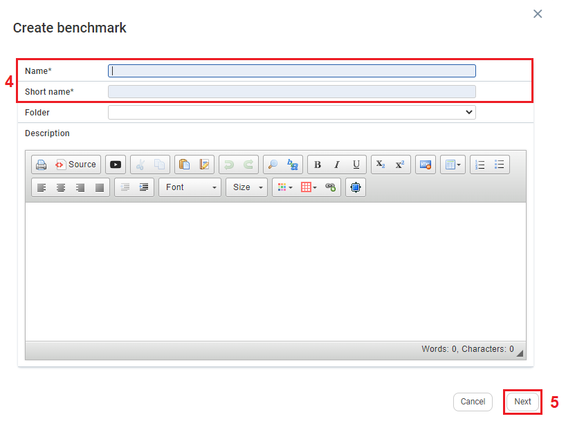
| 4 | Fill in Name*, and Short name*. Note: Filling in Folder and Description are optional. |
| 5 | Click Next. The second Create Benchmark window appears. |
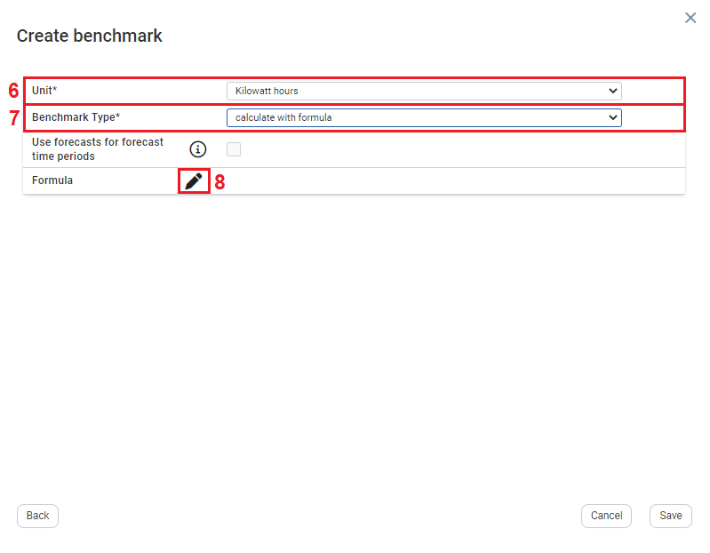
| 6 | Click the Unit* dropdown textbox and select a unit.
|
| 7 | Click the Benchmark Type* dropdown textbox and select calculate with formula. The Formula section appears. |
| 8 | On the Formula section, click the edit icon. The Edit window for the Benchmark formula opens. |
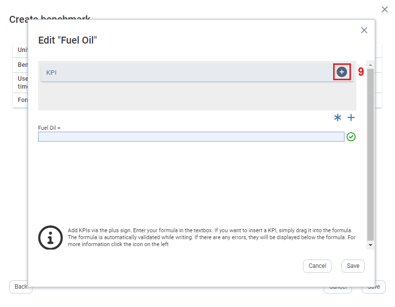
| 9 | To the right of a KPI click the  icon. icon. |
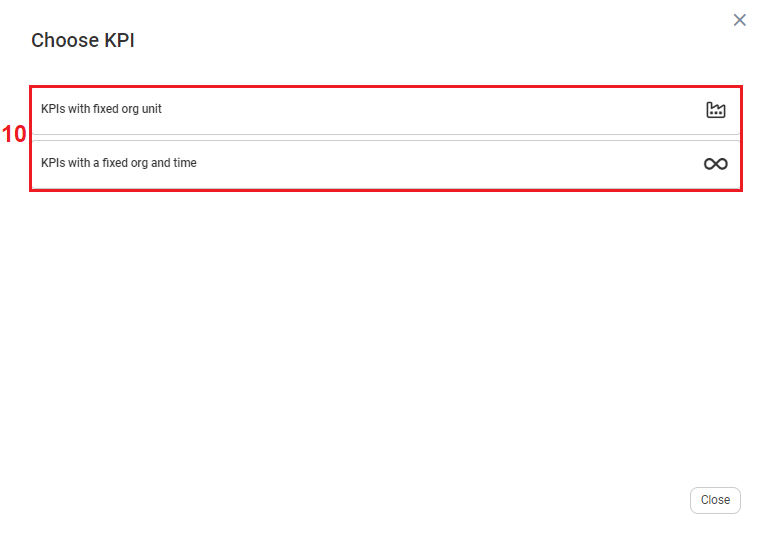
| 10 | The Choose KPI window opens, with two options: KPIs with fixed org unit, and KPIs with a fixed org and time. Note: Benchmarks always compare with an Organizational unit, hence the two options have org unit included. |
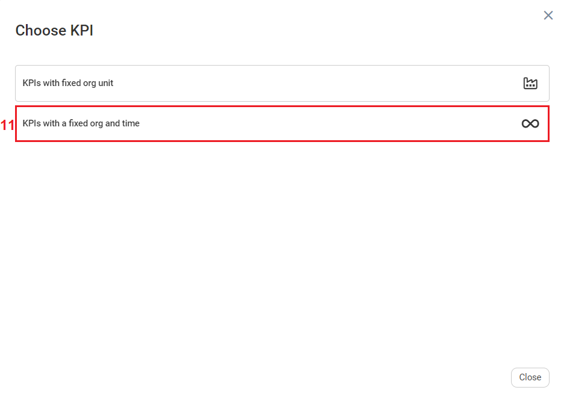
| 11 | Click KPIs with a fixed org and time. |
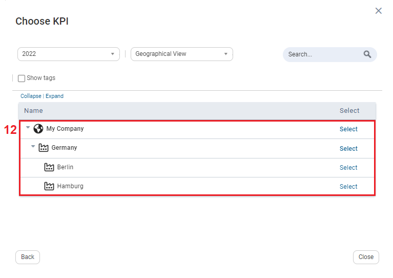
| 12 | Select a year. |
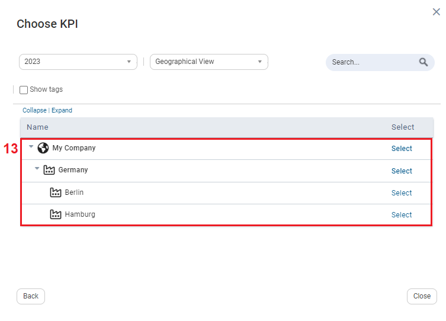
| 13 | Select an Org unit. Note: You cannot select more than one organizational unit. |
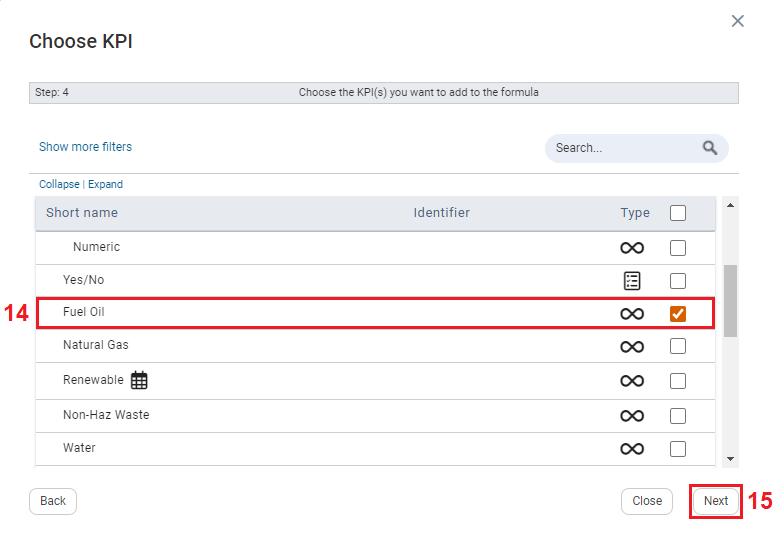
| 14 | Select a KPI. |
| 15 | Click Next. |
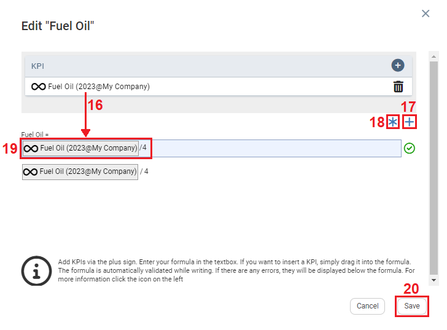
| 16 | To add a KPI in the formula, click and drag the KPI to the formula textbox. |
| 17 | If a list of KPIs is present on this window (if several KPIs were selected on the previous window), when you click the icon all the KPIs listed on this window will be added to the formula. |
| 18 | If a list of KPIs is present on this window (if several KPIs were selected on the previous window), when you click the icon all the KPIs listed on this window will be added to the formula. |
| 19 | In the Formula section you can divide the KPI by the number of organizational units selected. |
| 20 | Click Save. |
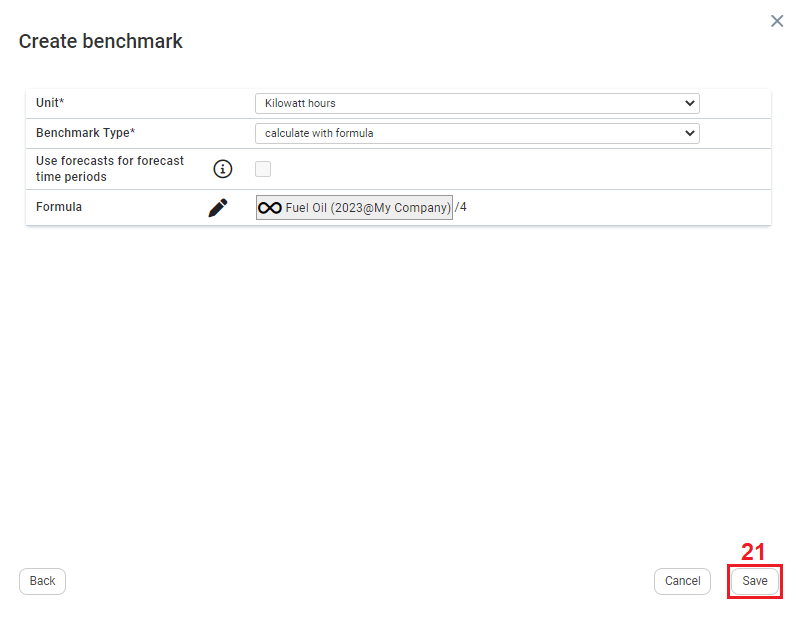
| 21 | On the Create Benchmark window, click Save. |
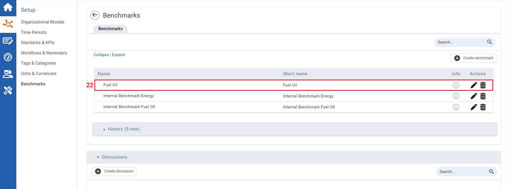
| 22 | The Benchmark is added to the Benchmark module. |
Once the Benchmark is created it needs to be allocated to a KPI. See Allocating a Benchmark to a KPI.